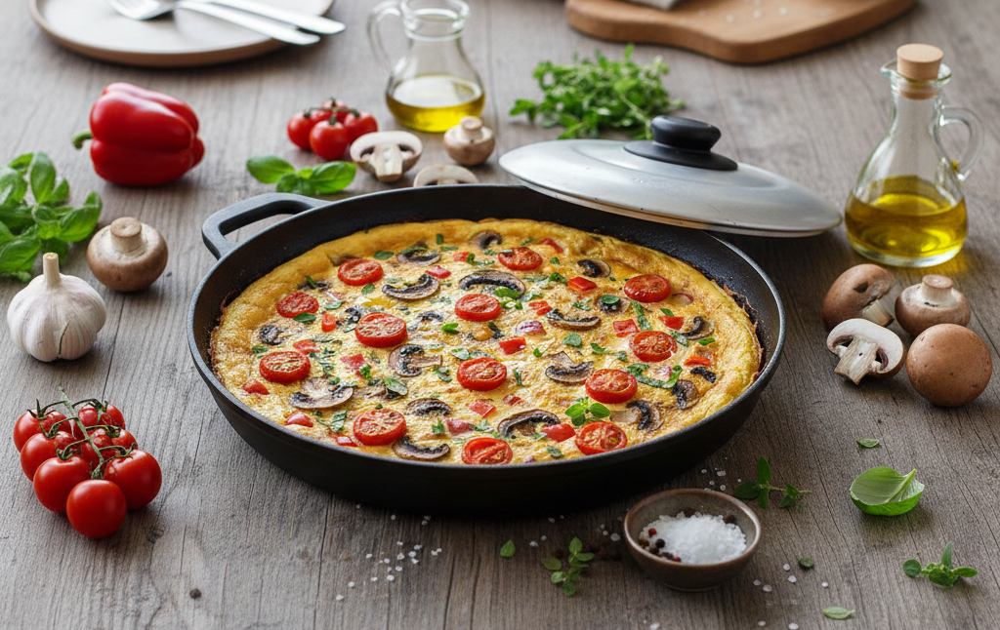

Schweinebraten de Provence
Zutaten für:
| 6 | Eier, Größe M |
| 150g | Kirschtomaten |
| 100g | Champinions |
| 50g | Parmesan |
| 1 | rote Paprikaschote |
| 1 | Zwiebel, rot |
| 1 | Knoblauzehe |
| 1 Strang | Rosmarin |
| 1 Strang | Thymian |
| 2 EL | Olivenöl |
| 1 Messerspitze | Pfeffer |
Zubereitung
Zuerst bereitest du das Gemüse vor, indem du die Knoblauchzehe und die Zwiebel schälst und beides in feine Würfel schneidest. Die Paprikaschote und die Champignons werden geputzt und in feine Streifen beziehungsweise Scheiben geschnitten, während du die Kirschtomaten wäschst, trocken tupfst und halbierst. Als Nächstes reibst du den Parmesan fein und hackst die gewaschenen Kräuter – alternativ kannst du hier auch einen Teelöffel gerebelten Oregano verwenden. Für die Basis der Frittata verquirlst du die sechs Eier in einer Schüssel, würzt sie mit Salz sowie schwarzem Pfeffer und rührst anschließend den geriebenen Käse und die Kräuter unter.
In einer beschichteten Pfanne (ca. 24 cm) erhitzt du das Olivenöl und lässt darin die Zwiebeln, Paprikastreifen und Champignons ohne Deckel für etwa drei Minuten dünsten, wobei du den Knoblauch und die Tomaten kurz vor Ende der Zeit unterhebst. Danach verteilst du die Eiermasse gleichmäßig über dem Gemüse und ruckelst kurz an der Pfanne, damit sie sich gut am Boden verteilt. Lasse die Frittata nun bei mittlerer Hitze mit geschlossenem Deckel für acht bis zehn Minuten stocken. Sobald sie fest genug ist, legst du einen großen Teller auf die Pfanne, stürzt die Frittata darauf und lässt sie vorsichtig wieder zurück in die Pfanne gleiten. Nach weiteren zwei Minuten Garzeit ist die gewünschte Konsistenz erreicht. Zum Servieren schneidest du die Frittata einfach in Viertel oder Kuchenstücke.
Guten Appetit!
Rezept erstellt von:
 Basti
Basti